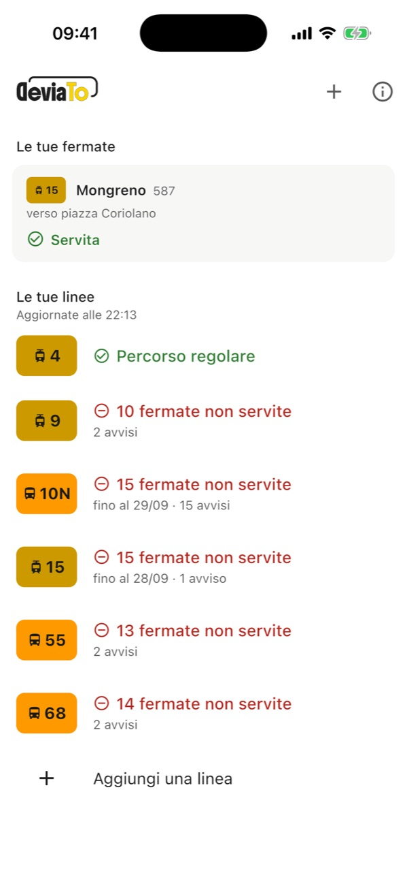
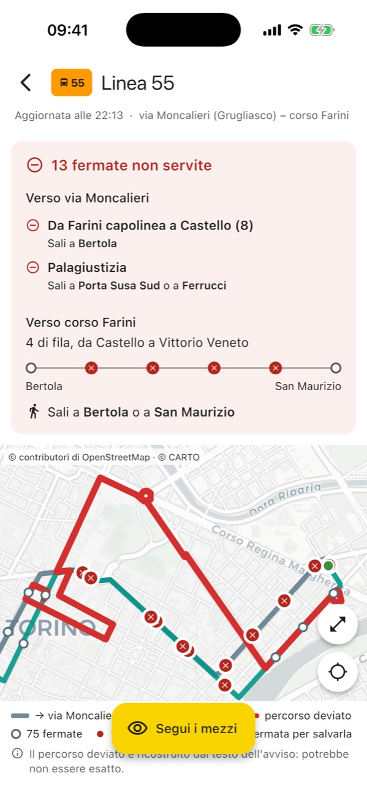
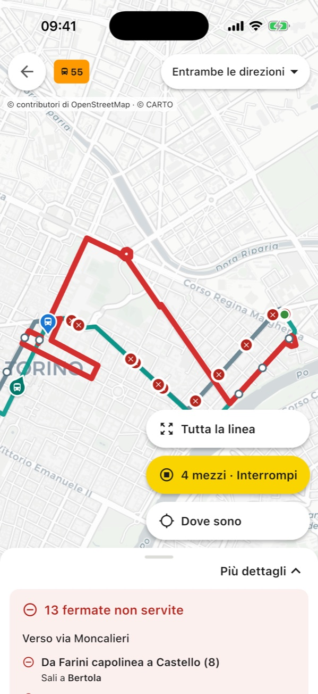

La tua fermata è ancora servita?
Quando GTT devia un bus o un tram, l'avviso elenca le vie del nuovo percorso. A te serve sapere un'altra cosa: se dalla tua fermata il bus passa ancora e, se no, dove andare a prenderlo. DeviaTo te lo dice.
Presto su App Store e Google Play
È gratis e non serve registrarsi.
- Vibò1410sali qui
- Largo Giachino Sud422, non servita
- Verolengo1758, non servita
- Brin1760, non servita
- Mortara1762, non servita
- Treviso1764, non servita
- Umbria2170, non servita
- Regina Margherita1911, non servita
- Industria193, non servita
- Principe Eugenio2174, non servita
- Statuto Nord373sali qui
avvisi di GTTUno per ogni fermata sospesa, nelle due direzioni.
risposta di DeviaToNove fermate di fila non servite. Sali a Vibò o a Statuto Nord.
Come si usa
Funziona con tutte le linee GTT: tram e bus, urbane ed extraurbane.

1Scegli le tue linee
Tocca + e aggiungi le linee che prendi. Nella schermata principale vedi subito quali sono deviate e quante fermate saltano.

2Apri quella deviata
Per ogni direzione trovi le fermate dove il bus non passa e la più vicina dove prenderlo. Tocca la tua fermata sulla mappa per salvarla: la ritrovi in cima, appena apri l'app.

3Guarda dove sono i bus
Sulla mappa grande il giro deviato è in rosso. Con «Segui i mezzi» vedi i bus in tempo reale e dove vanno: se ripassano dal percorso normale, la deviazione probabilmente è finita.
Meglio nessuna mappa che una mappa sbagliata
Da dove vengono i percorsi
Negli avvisi GTT descrive la deviazione a parole, via per via. DeviaTo la ridisegna sulla mappa e poi la ricontrolla. Se qualcosa non torna, non disegna niente e ti mostra l'avviso com'è.
I tuoi dati
Non devi registrarti e l'app non raccoglie dati personali. La posizione è facoltativa e resta sul telefono. Il sito non usa cookie. Più dettagli nella pagina sulla privacy.
Domande
È un'app di GTT?
No, e non è collegata a GTT. Usa i dati che GTT mette a disposizione di chiunque voglia riusarli. Se l'app e l'avviso dicono cose diverse, vale l'avviso.
Posso fidarmi di quello che dice?
Quando GTT sospende una fermata indicandone il numero, sì. Quando descrive un giro di vie, il percorso l'ha ricostruito l'app e può sbagliare: per questo ogni deviazione porta un'etichetta, «Verificato» o «Da confermare», e l'avviso originale è sempre in fondo alla linea.
Ogni quanto si aggiorna?
Di giorno ogni mezz'ora, la sera ogni ora, di notte più di rado. Le posizioni dei bus sulla mappa invece sono in tempo reale.
Mi avvisa se la mia linea devia?
Non ancora. Per ora le novità si vedono aprendo l'app.
Hai trovato un errore?
Se DeviaTo segna chiusa una fermata dove il bus passa, o il contrario, scrivimi. Dimmi la linea, la fermata e quando è successo: mi serve per capire cosa è andato storto.
Scrivi a devia.to@icloud.com